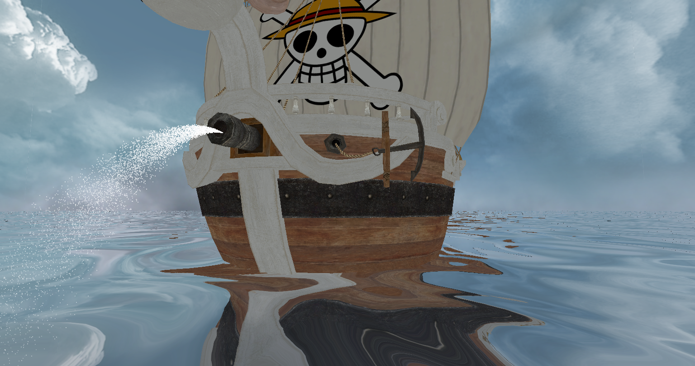
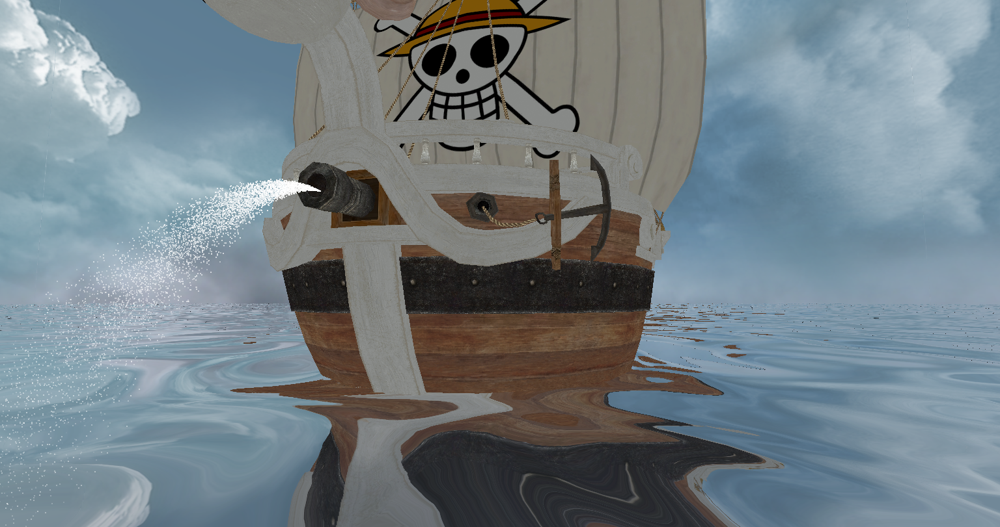
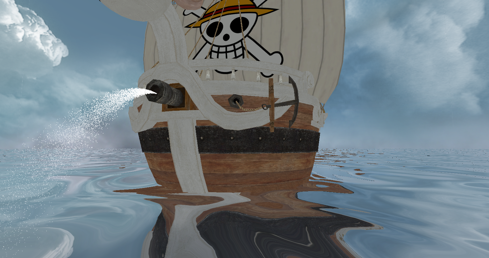

 Final project, a collaboration with my peer Marco Mendez. I personally created the bloom effects and the water effects; my partner was responsible for the multi-textured model and (probably) the particle system. This was coded in C++ using OpenGL.
The image on the left has bloom active, the image on the right does not. The bloom is most visible in the particle system emerging from the cannon and the clouds in the skybox.

The bloom effects are implemented using a Gaussian blur over the highlights of the scene. First, the items are rendered as normal; they are then filtered for the highlights, which are extracted into a separate framebuffer. The highlights are then flipped back and forth between two framebuffers, each time blurring either on the horizontal or vertical axes. The result is then added back to the base image to create the bloom effect.
The water reflection is implemented by rendering the image twice, only rendering what is above the water. The first render uses the default camera; the second render uses the camera's position reflected beneath the water, so its new depth below the water is the same as its previous height above the water, and the angle is now tilted up to the same degree as it was tilted down. The second image is then transformed using a du/dv map to create the wave effect for things reflected from above the water (models, skybox, and the like). The two images are then painted onto the water quad, using the camera angle to determine how they are mixed in order to replicate the Fresnel effect.
There were three assignments for this course. For more information on individual assignments, follow the rabbit hole. The final project was a combination of image processing and an artificial intelligence which attempted to replicate a given art style on an image. The user provides two sample images which establish the art style (one is unstyled, one is styled), as well as an image to be transformed, and the software attempts to replicate the given art style on the final image. This is based on the Image Analogies paper by Hertzman, and others. The input images were provided here. This was coded in C++.
Input images:


Target and output images:


A client-server implementation of the game Chopsticks. Source code is available on GitHub. It is written in an Object-Oriented fashion using D, and built with dub. Clients and servers may connect through IPv4 sockets or through Unix sockets, if available.
I've recently been working on creating a character-level recursive neural network which is trained on The Count of Monte Cristo by Alexandre Dumas (père). It was originally based off a tutorial by Jason Brownlee, and has since grown into a little project on its own. The GitHub repository may be perused here
All of the characters are reduced to lower case for the network, so it makes no attempt at making correct capitalization. Below is some sample output; its grammar is way off, but it otherwise gets spelling mostly correct. It tends to generate conversations between Monte Cristo and someone else (quite frequently, Monte Cristo will be talking to himself).
"you know you will be here." "you will prove you?" "yes; what do you be to see the count?" "yes," said monte cristo, "what do you know?" "you will not have completed me." "well," said monte cristo; "i will know what you will be with the carriage." "and you will not know what you know they were only the count’s house;" "yes; i have come to my country."This was generated after roughly a day of training on a two-stacked layer of LSTM units, with 256 units in each layer. The output layer uses a softmax activation function, for which a temperature of 0.3 is provided during generation.